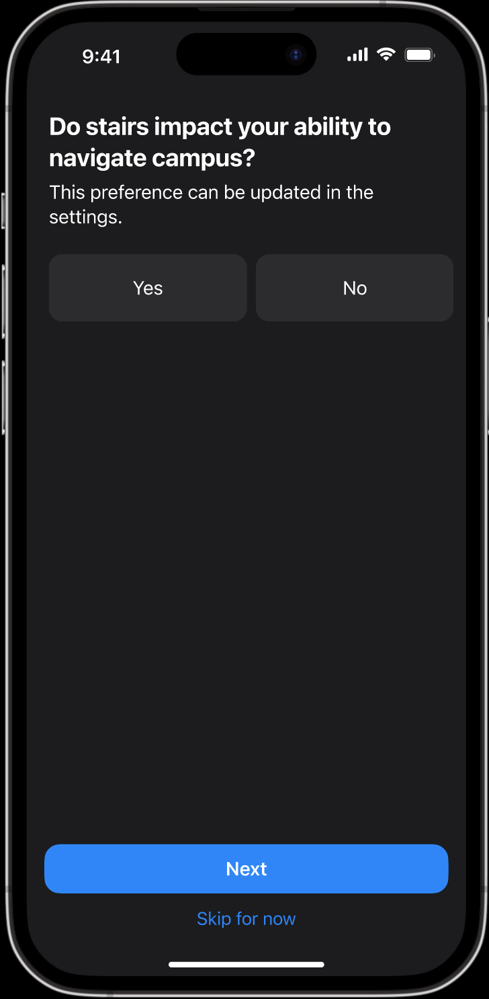
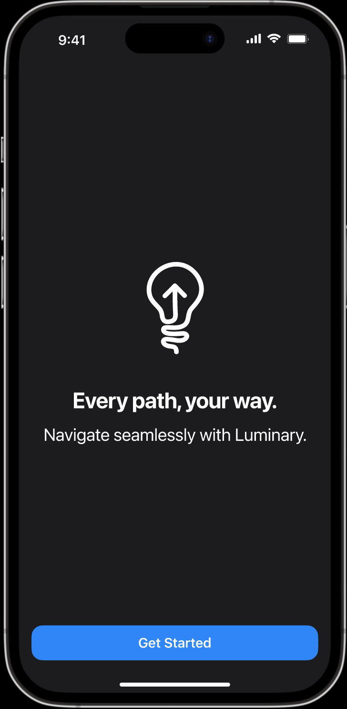
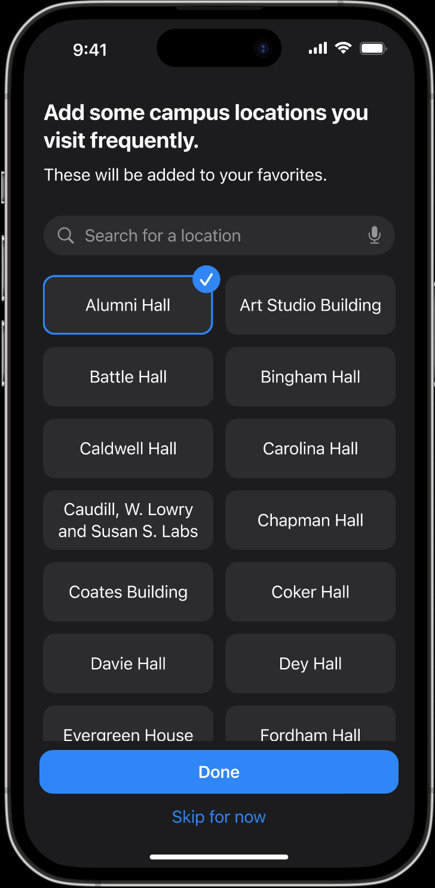
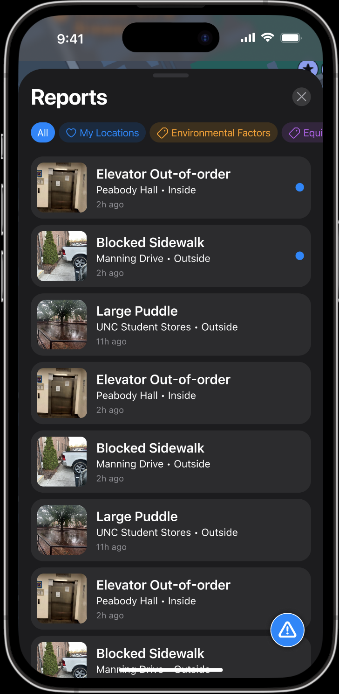
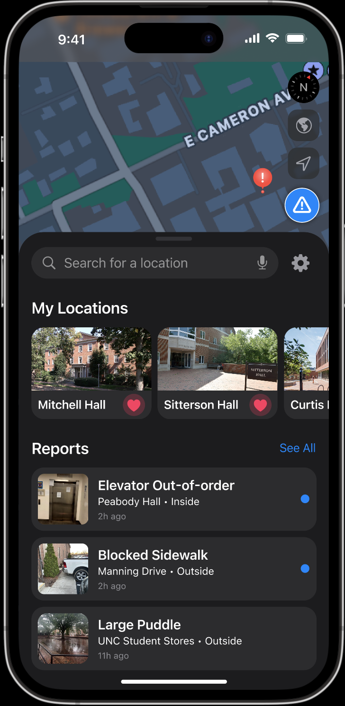
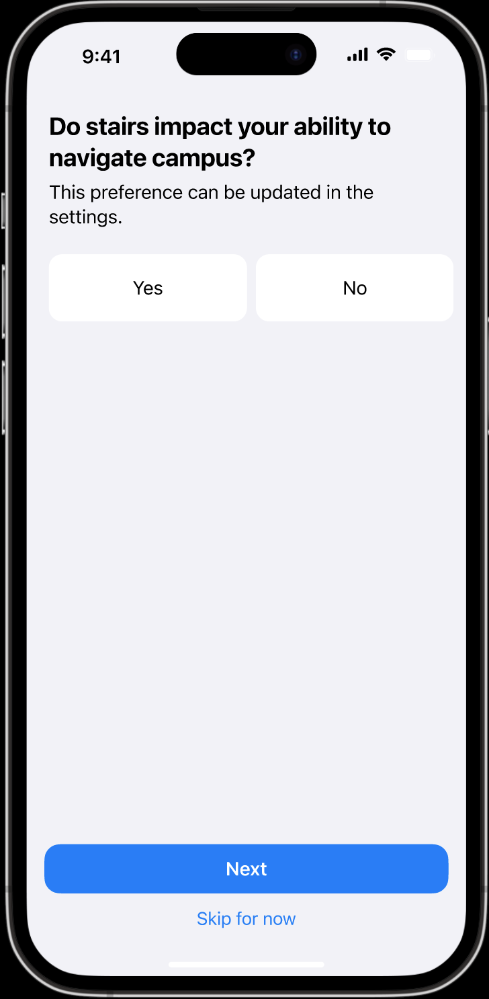
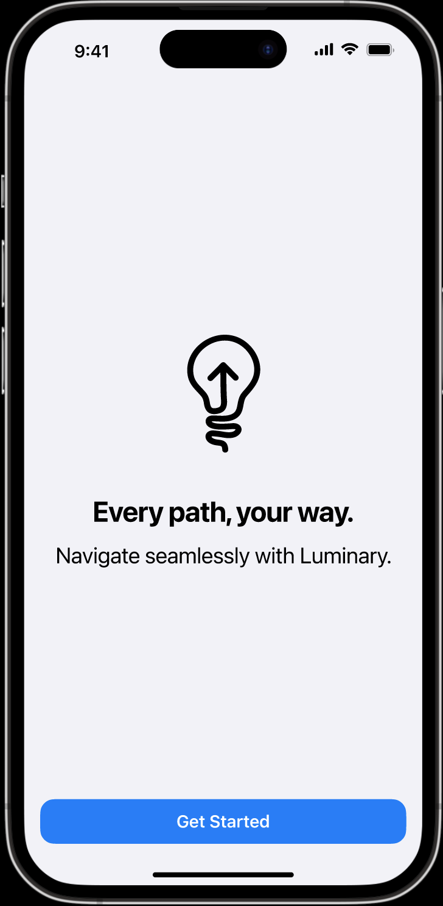
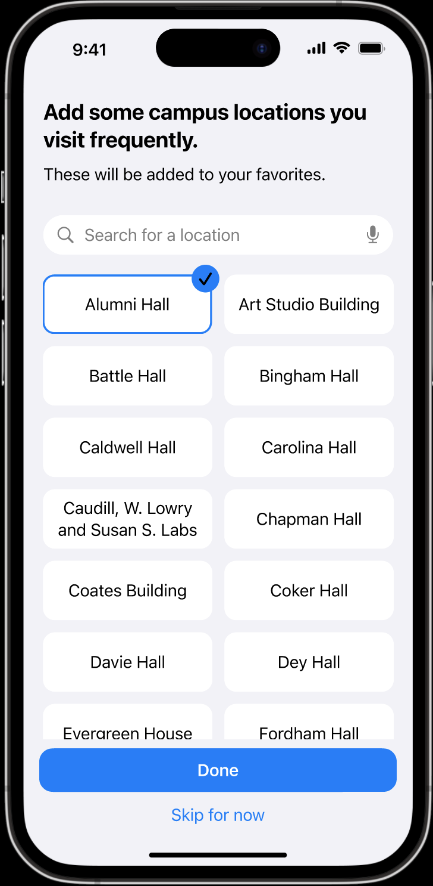
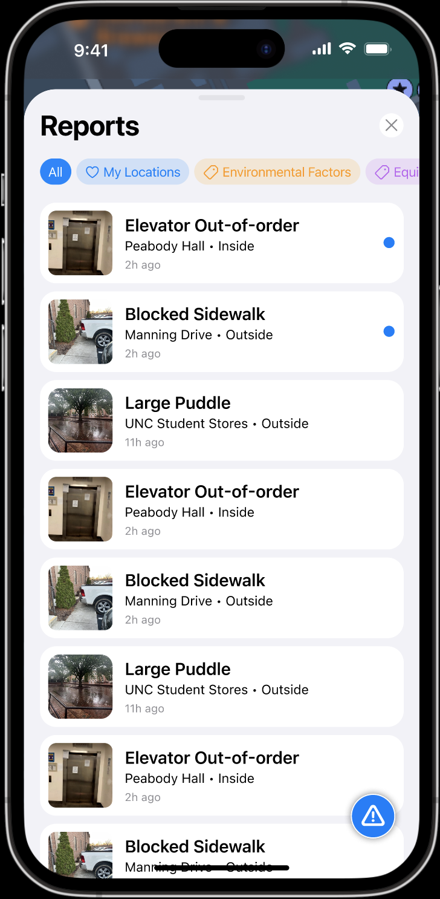
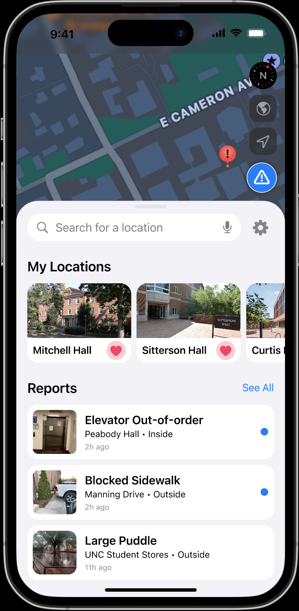

Walk Through
1
Understanding Audience
User Research & Insights
To understand the needs and preferences of potential users, I conducted basic user research to gather information. The survey aimed to gather insights on how users discover new music, their frustrations with current methods, and what features they would like in a music discovery app. The findings revealed that users often feel overwhelmed by the sheer volume of music available and desire a more personalized and engaging way to explore new tracks.
2
Process
Design Goals
The main design goal was to improve the user experience by implementing a light mode option, allowing users to switch between light and dark themes based on their preferences and lighting conditions. This update aimed to enhance accessibility, readability, and overall usability of the app for all students navigating the campus.
-
Enhance readability and comfort
Ensure text, icons, and interface elements are easy to read in a bright environment.
-
Maintain brand consistency
Adapt the existing dark mode style while keeping the app’s visual identity intact.
-
Support accessibility standards
Ensure sufficient contrast and usability for all users, including those with visual impairments
-
Provide a seamless toggle experience
Allow users to switch between dark and light mode without disrupting their workflow or navigation.
3
UI Implementation
Adding a new look
With these goals in mind, I adapted Luminary’s existing interface into a light mode design. This process included testing contrast, readability, and visual hierarchy while preserving familiar navigation patterns.
Dark Mode - the original





Light Mode - the updated




